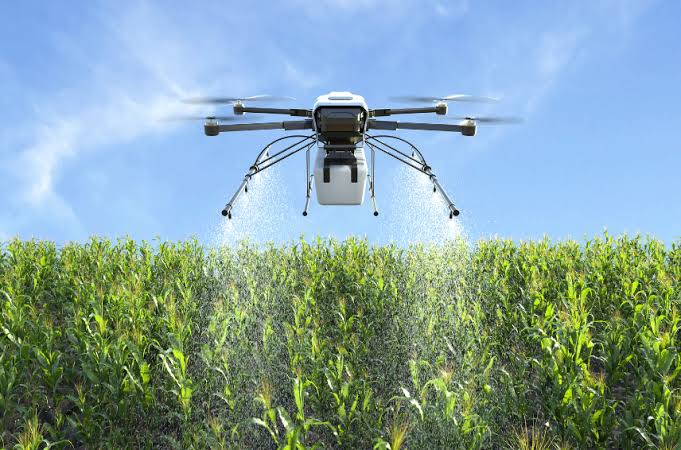
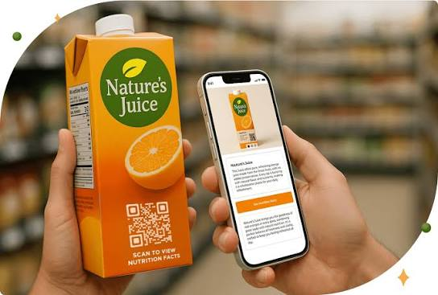
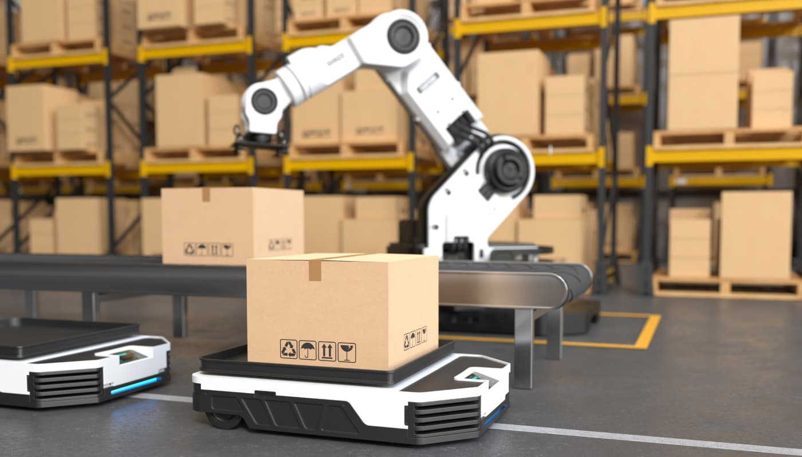

1. Agricultura inteligente
La agricultura inteligente utiliza tecnologías digitales para mejorar los cultivos y aprovechar mejor los recursos naturales.
Mediante sensores se pueden controlar factores como la humedad del suelo, la temperatura y las condiciones meteorológicas.
Ejemplo real: Telefónica
Telefónica ha desarrollado soluciones de agricultura inteligente utilizando IoT, inteligencia artificial, cloud y blockchain. Estas tecnologías ayudan a controlar el riego, prevenir enfermedades y mejorar la producción.

Oportunidad para nuestra empresa: ofrecer sistemas de sensores para controlar los cultivos y ahorrar agua.
2. Trazabilidad alimentaria y blockchain
Este mercado utiliza tecnologías digitales para conocer el recorrido de los alimentos desde su origen hasta que llegan al consumidor.
Blockchain permite registrar información de forma segura y facilita comprobar la procedencia de los productos.
Ejemplo real: Deoleo e IBM
Deoleo colaboró con IBM para utilizar blockchain en la trazabilidad de sus aceites de oliva. Mediante un código QR en las botellas, los consumidores pueden consultar información sobre el origen y el recorrido del aceite.

Oportunidad para nuestra empresa: ofrecer códigos QR que permitan a los clientes conocer el origen y la calidad de los alimentos.
3. Servicios digitales en la nube
La nube permite almacenar información, utilizar aplicaciones y acceder a datos a través de Internet sin necesitar toda la infraestructura físicamente.
En el sector agroalimentario permite gestionar pedidos, controlar existencias y consultar información de los cultivos.
Ejemplo real: Ibercaja y Microsoft Azure
Ibercaja impulsó un proyecto de agricultura inteligente con Microsoft Azure. Utiliza dispositivos IoT y datos almacenados en la nube para ayudar a los agricultores a decidir cuándo sembrar, regar, fertilizar o cosechar.
Ver proyecto de Ibercaja y Microsoft Azure
Oportunidad para nuestra empresa: ofrecer plataformas digitales para que las empresas alimentarias gestionen su producción y sus pedidos.
4. Logística inteligente
La logística inteligente utiliza tecnologías digitales para mejorar el almacenamiento, el transporte y la distribución de productos.
En el sector agroalimentario es especialmente importante porque muchos alimentos necesitan mantenerse a una temperatura adecuada durante el transporte.
Ejemplo real: DHL y Microsoft
DHL Supply Chain y Microsoft desarrollaron una plataforma basada en la nube de Microsoft Azure para facilitar la integración de robots en los almacenes. Una de sus primeras implantaciones se realizó en Madrid.

Oportunidad para nuestra empresa: ofrecer sensores para controlar la temperatura de los alimentos y sistemas para optimizar el transporte y almacenamiento.
5. Tecnologías habilitadoras digitales emergentes
Biotecnología industrial
La biotecnología industrial utiliza organismos vivos o procesos biológicos para desarrollar y mejorar productos, materiales y procesos.
En el sector agroalimentario puede utilizarse para fabricar bioplásticos, biofertilizantes y otros materiales de origen biológico.
Ejemplo real: Novamont
Novamont desarrolla Mater-Bi, una gama de bioplásticos fabricados con materiales de origen renovable, como almidones y aceites vegetales. Estos materiales son biodegradables y compostables y pueden utilizarse en envases alimentarios.
Ver productos Mater-Bi de Novamont
Oportunidad para nuestra empresa: investigar y utilizar envases de origen vegetal que puedan sustituir algunos plásticos convencionales.
¿Por qué nos interesa esta tecnología?
Nos interesa porque puede ayudar a reducir el uso de materiales derivados del petróleo y desarrollar envases más sostenibles para nuestros productos alimentarios.
6. Tabla de THD, mercados y oportunidades
| THD | Mercado | Oportunidad de negocio |
|---|---|---|
| IoT e inteligencia artificial | Agricultura inteligente | Control de cultivos y ahorro de agua. |
| Blockchain | Trazabilidad alimentaria | Seguimiento del origen de los alimentos. |
| Cloud computing | Servicios digitales en la nube | Plataformas para gestionar empresas alimentarias. |
| IoT y robótica | Logística inteligente | Control de almacenes y transporte. |
| Biotecnología industrial | Mercado de bioplásticos | Fabricación y utilización de envases de origen vegetal. |